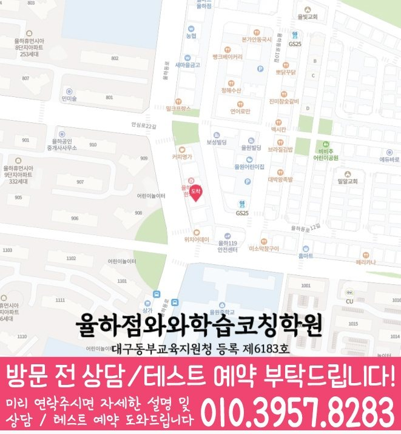

와와학습코칭센터 율하점
대구 동구 율하동로 32 4층 와와학습코칭센터
GRADE 8 MATH LOCAL GUIDE
와와학습코칭센터 율하점의 위치와 과목별 가능 학년을 확인하고, 중2 수학 상담에 필요한 학교·학습 자료를 준비해 보세요.
와와학습코칭센터 율하점의 수학 가능 학년 안내: 중2. 현재 수업 시간·반 편성·정원은 상담에서 확인해 주세요.
대구 동구 율하동로 32 4층 와와학습코칭센터
현재 반 편성과 시간표는 상담에서 확인
대구동부교육지원청 등록 제6183호
통합 상담 전화 010-6839-8283 · 문의할 때 와와학습코칭센터 율하점과 학생의 학년을 말씀해 주세요.
교습비 자료의 과목·수업 시간·횟수와 별도 비용을 상담 내용과 함께 확인해 주세요.
아래는 가정에서 활용하는 일반 학습 점검 예시입니다. 현재 학교·교재에서 배우는 내용에 해당할 때 활용하고, 아직 배우지 않은 내용은 현재 진도에 맞춰 확인해 주세요. 학생의 학습 수준과 센터의 실제 수업 구성은 상담에서 확인할 수 있습니다.
연립한 두 식에 구한 값을 각각 넣어 확인했나요?
직접 확인할 예 x + y = 7, x − y = 1의 해는 x = 4, y = 3입니다. 두 식을 더하는 이유와 검산 결과를 적어 보세요.
x의 변화량과 y의 변화량을 표와 식에서 함께 읽을 수 있나요?
직접 확인할 예 y = 2x + 1에서 x가 1 증가하면 y는 2 증가합니다. x = 0일 때의 점과 다른 한 점을 찍어 직선을 그려 보세요.
그림에 없는 조건을 모양만 보고 사용하지 않았나요?
직접 확인할 예 삼각형의 두 내각이 50°, 60°이면 나머지는 70°입니다. 세 내각의 합이 180°라는 근거를 계산과 함께 적어 보세요.
틀린 문제에서 놓친 조건, 처음 막힌 계산 줄, 답을 확인한 방법을 적어 보세요. 해설을 덮고 다시 풀 때 같은 줄에서 멈추는지 확인하고, 해결하지 못한 부분은 질문으로 남겨 주세요.
교재 이름·쪽수와 혼자 해결한 부분을 함께 표시하면 상담에서 현재 학습 상태를 설명하기 쉽습니다.
제공 자료의 중학교 참고 목록: 강동중학교, 동원중학교, 새론중학교, 신기중학교, 안심중학교, 율원중학교.
학교 목록은 지역 참고 자료입니다. 해당 학교별 반 운영이나 시험 대비 수업을 확인한 정보는 아닙니다. 학생이 사용하는 교재, 실제 과목명·진도, 시험 범위 안내와 최근 오답을 준비해 주세요.
계산 과정을 어디까지 설명해야 하는지, 오답의 이유를 어떻게 확인하는지, 다시 풀 문제와 결과를 어떻게 기록하는지 질문해 보세요.
위의 센터 정보에 적힌 가능 학년을 확인하고 현재 시간표·반 편성·과목 범위를 문의해 주세요. 이 질문과 학습 예시는 센터의 확정된 수업 방식이나 제공 서비스를 뜻하지 않습니다.
와와학습코칭센터 율하점의 수학 가능 학년 안내: 중2. 현재 수업 시간·반 편성·정원은 상담에서 확인해 주세요.
학교 참고 목록은 강동중학교, 동원중학교, 새론중학교, 신기중학교, 안심중학교, 율원중학교입니다. 학교별 전용 반 개설 여부는 별도로 확인해 주세요. 재학 학교와 학년을 알려 주고 학교 시험 범위표, 교과서와 수업 프린트를 바탕으로 상담할 수 있습니다.
풀이가 남은 문제와 최근 시험지를 준비해 보세요. 학생이 혼자 해결한 부분과 도움이 필요했던 부분을 표시하고, 희망하는 수업 요일·시간도 함께 정리하면 좋습니다.
센터의 교습비 자료와 상담에서 과목·횟수·수업 시간을 대조해 주세요. 교재비 등 별도 비용, 결석 시 보강 기준과 과제 피드백 방식도 함께 확인하면 좋습니다.
CONSULTATION SCENARIO
아래 두 장면은 중2 수학 상담 전에 준비할 자료와 질문을 정리한 점검 예시입니다.
가정 상담 장면: 신기동의 한 학부모가 최근 자료 가운데 오답 재학습에서 막힌 문제와 개념 연결 관련 학습 기록을 나눠 가져오고, 중2 수학 상담에서 제안할 첫 주 확인 항목과 다음 점검일을 질문하는 상황을 가정할 수 있습니다. 이 중2 수학 상담 장면은 실제 이용 후기나 특정 학생의 성과가 아니며, 상담 준비용 가상 예시입니다. 신기동에서 중2 수학을 공부하는 학생의 학습 결과는 출발점과 실천 정도에 따라 달라질 수 있습니다.
비교 상담 장면: 신기동에서 중2 수학을 공부하는 학생의 학교 일정과 통학 가능 시간을 적어 두고 와와학습코칭센터 율하점에서 계산 정확도 관련 기록을 확인하는 방식, 과제 조절 기준, 학부모 공유 항목을 묻는 장면을 생각해 볼 수 있습니다. 이 중2 수학 상담 장면에서 비교할 항목은 학생의 실제 자료와 가능한 일정에 맞춰 조정해야 합니다.


와와학습코칭센터 율하점의 위치와 신기동 생활권을 기준으로 중2 수학 상담 정보를 확인합니다. 방문 전 실제 이동 동선과 상담 가능 시간을 함께 확인해 주세요.